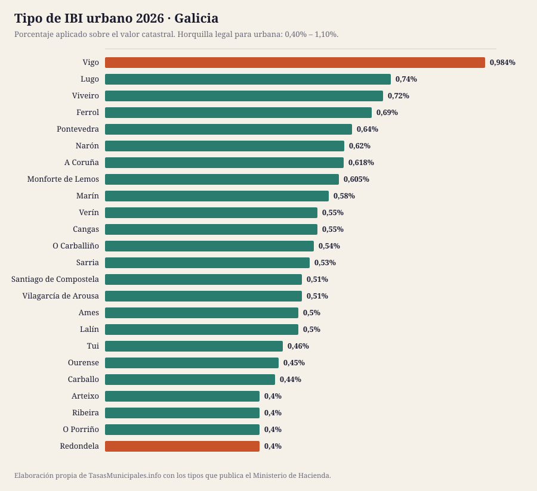
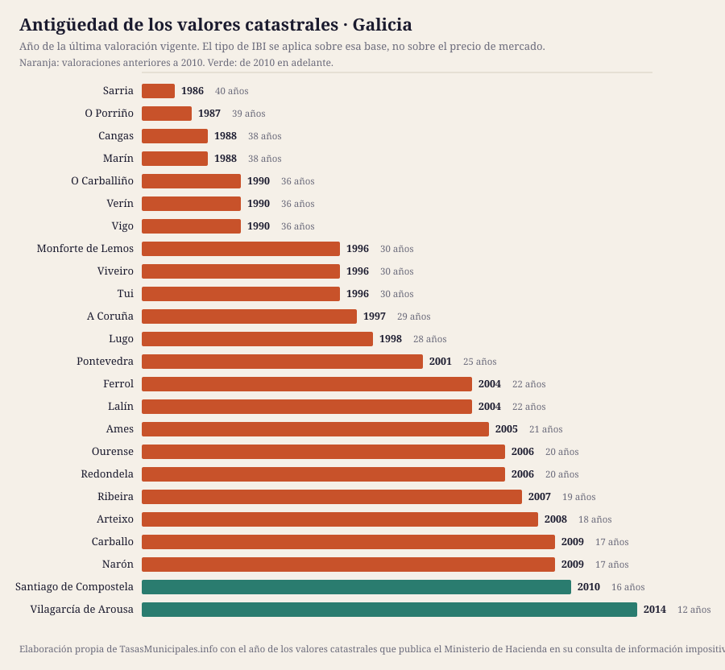
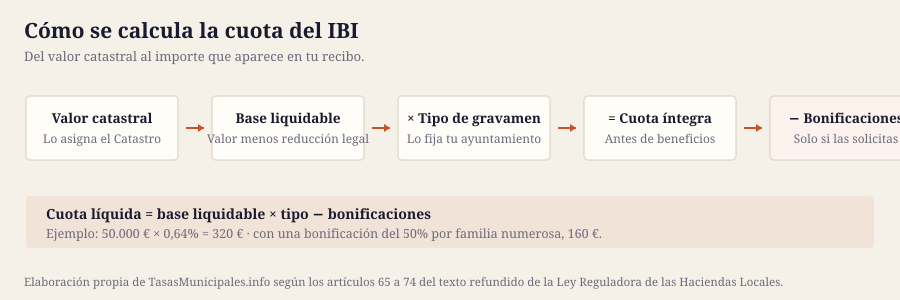

Esta guía reúne el IBI, la plusvalía municipal, el impuesto de circulación y las bonificaciones de los 24 municipios de Galicia que cubrimos, con el detalle de cada uno y una tabla para compararlos de un vistazo. Población cubierta: 1.419.619 habitantes.
El tipo de IBI urbano en Galicia se mueve entre el 0,4% de Arteixo y el 0,984% de Vigo, con una media de 0,56% en los 24 municipios analizados. Esa horquilla parece pequeña, pero sobre un valor catastral de 50.000 € supone una diferencia de 292 € al año según dónde esté el inmueble: 200 € en Arteixo frente a 492 € en Vigo.
El tipo no lo explica todo: sobre él se aplica el valor catastral, y en Galicia las valoraciones vigentes van de 1986 en Sarria a 2014 en Vilagarcía de Arousa. En 22 de los 24 municipios con dato la última valoración es anterior a 2010, así que la base del recibo arrastra el mercado inmobiliario de entonces. El año de los valores de cada municipio está en la tabla, tal y como lo publica el Ministerio de Hacienda.
Aquí no publicamos el importe de la tasa de residuos ni las fechas de cobro de cada municipio: no existe fuente estatal que los recoja y preferimos el hueco a un dato sin respaldo. Lo que sí fija la ley es el plazo por defecto del IBI, del 1 de septiembre al 20 de noviembre cuando la ordenanza no señala otro (art. 62.3 de la Ley General Tributaria). La mecánica general del impuesto está en las guías de IBI 2026, bonificaciones y plusvalía; aquí van los datos de Galicia.
Ordenable por cualquier columna. Todas las cifras salen de la consulta de información impositiva del Ministerio de Hacienda. «Cuota IBI» aplica el tipo de cada municipio a un valor catastral común de 50.000 €; con el de tu recibo, usa la calculadora. «Valores catastrales» es el año de la última valoración vigente, que determina la base sobre la que se aplica el tipo.
| Municipio | Habitantes | IBI urbano | IBI rústico | Cuota IBI (VC 50.000 €) | Valores catastrales | Tipo BICE |
|---|---|---|---|---|---|---|
| Vigo | 294.489 | 0,984% | 0,732% | 492 € | 1990 | 0,984% |
| A Coruña | 251.543 | 0,618% | 0,618% | 309 € | 1997 | 1,3% |
| Ourense | 105.769 | 0,45% | 0,5% | 225 € | 2006 | 1,3% |
| Santiago de Compostela | 100.965 | 0,51% | 0,48% | 255 € | 2010 | 1,3% |
| Lugo | 100.143 | 0,74% | 0,5% | 370 € | 1998 | 1,3% |
| Pontevedra | 83.316 | 0,64% | 0,64% | 320 € | 2001 | 0,96% |
| Ferrol | 64.367 | 0,69% | 0,6% | 345 € | 2004 | 1,3% |
| Narón | 39.953 | 0,62% | 0,62% | 310 € | 2009 | 1,3% |
| Vilagarcía de Arousa | 37.888 | 0,51% | 0,54% | 255 € | 2014 | 0,96% |
| Arteixo | 34.403 | 0,4% | 0,65% | 200 € | 2008 | 1,3% |
| Ames | 33.276 | 0,5% | 0,33% | 250 € | 2005 | 1,3% |
| Carballo | 32.120 | 0,44% | 0,44% | 220 € | 2009 | 1,3% |
| Redondela | 28.874 | 0,4% | 0,3% | 200 € | 2006 | 1,3% |
| Ribeira | 27.102 | 0,4% | 0,4% | 200 € | 2007 | 0,6% |
| Cangas | 26.711 | 0,55% | 0,3% | 275 € | 1988 | 1,3% |
| Marín | 23.991 | 0,58% | 0,3% | 290 € | 1988 | 0,96% |
| O Porriño | 20.965 | 0,4% | 0,3% | 200 € | 1987 | 1,3% |
| Lalín | 20.292 | 0,5% | 0,3% | 250 € | 2004 | 1,3% |
| Monforte de Lemos | 18.933 | 0,605% | 0,38% | 302 € | 1996 | 1,3% |
| Tui | 17.468 | 0,46% | 0,3% | 230 € | 1996 | 1,3% |
| Viveiro | 15.120 | 0,72% | 0,83% | 360 € | 1996 | 1,3% |
| O Carballiño | 14.249 | 0,54% | 0,3% | 270 € | 1990 | 0,6% |
| Verín | 13.956 | 0,55% | 0,9% | 275 € | 1990 | 0,6% |
| Sarria | 13.726 | 0,53% | 0,63% | 265 € | 1986 | 1,3% |


El recibo, el calendario y las solicitudes se tramitan donde esté la recaudación, que no siempre es el ayuntamiento:
| Provincia | Municipios en la guía | Organismo de recaudación | Estado del enlace |
|---|---|---|---|
| Pontevedra | 9 | Deputación de Pontevedra | responde correctamente |
| A Coruña | 8 | Deputación da Coruña | responde correctamente |
| Lugo | 4 | Deputación de Lugo | responde correctamente |
| Ourense | 3 | Deputación Provincial de Ourense | responde correctamente |
De ahí que no haya una fecha única para toda Galicia: cada organismo publica su calendario.
La mediana del tipo urbano de los 24 municipios de Galicia es del 0,54%, y queda 0,072 puntos por debajo de la mediana nacional de la guía (0,61%): 36 € menos al año por un inmueble de 50.000 €. 4 de ellos aplican exactamente el mínimo legal del 0,40% (Arteixo, Redondela, Ribeira, O Porriño).
En el extremo alto está Vigo con el 0,984%; en el bajo empatan 4 municipios al 0,4%. Ojo: un tipo alto no significa un recibo alto, porque la cuota es valor catastral × tipo. Ranking nacional →
En Galicia, 3 municipios han subido el tipo y ningún municipio lo ha bajado; el resto lo mantiene.
| Municipio | 2024 | 2025 | Variación |
|---|---|---|---|
| Lugo | 0,67% | 0,74% | Sube 0,070 puntos |
| Ferrol | 0,63% | 0,69% | Sube 0,060 puntos |
| Vigo | 0,946% | 0,984% | Sube 0,038 puntos |
El IBI no es el único tributo que aprueba un ayuntamiento. En Galicia, el ICIO va del 1,5% al 4% (mediana 3%); un turismo de 8 a 11,99 CV paga entre 34,08 € y 68,16 € al año; 17 de 21 aplican los coeficientes máximos de plusvalía del art. 107.4 TRLRHL.
| Municipio | ICIO (obras) | IVTM 8–11,99 CV | Plusvalía: tipo máximo | ¿Coeficientes al tope legal? |
|---|---|---|---|---|
| A Coruña | 4% | 62,62 € | 25% | Sí |
| Ames | 2,5% | 44,30 € | 25% | No |
| Arteixo | 3,5% | 52,23 € | 20% | Sí |
| Cangas | 3,2% | 54,53 € | 21% | Sí |
| Carballo | 2,5% | 40,90 € | 25% | Sí |
| Ferrol | 3% | 58,00 € | 26% | Sí |
| Lalín | 3% | 34,08 € | 30% | Sí |
| Lugo | 3% | 59,32 € | 28% | No |
| Marín | 2,8% | 49,42 € | 25% | Sí |
| Monforte de Lemos | 3% | 43,92 € | 25% | Sí |
| Narón | 3% | 62,71 € | 30% | Sí |
| O Carballiño | 2,29% | 34,08 € | 17% | Sí |
| O Porriño | 2,2% | 34,08 € | 20% | Sí |
| Ourense | 2,6% | 57,80 € | 26% | Sí |
| Pontevedra | 3,2% | 55,85 € | 21% | Sí |
| Redondela | 4% | 52,00 € | 15% | Sí |
| Ribeira | 2,5% | 52,60 € | 25% | Sí |
| Santiago de Compostela | 2% | 57,50 € | 22% | No |
| Sarria | 2% | 37,49 € | — | — |
| Tui | 4% | 40,56 € | 27% | Sí |
| Verín | 2% | 43,62 € | — | — |
| Vigo | 3,5% | 68,16 € | 30% | Sí |
| Vilagarcía de Arousa | 4% | 52,50 € | 25% | No |
| Viveiro | 1,5% | 47,00 € | — | — |
Fuente: Ministerio de Hacienda. El guion marca lo que la consulta no publica. La tarifa completa del IVTM está en cada ficha.
Guía del impuesto de circulación → · Comparativa del IVTM → · Quién aplica el coeficiente máximo de plusvalía →
La cuota del IBI es valor catastral × tipo, así que la fecha de la última valoración colectiva pesa tanto como el porcentaje que vota el pleno. En Galicia la mediana está en 1999, más antigua que la del conjunto de la guía (2005), y 18 de 24 municipios arrastran valores de hace 20 años o más.
| Municipio | Año de la valoración | Antigüedad | Tipo urbano |
|---|---|---|---|
| Sarria | 1986 | 40 años | 0,53% |
| O Porriño | 1987 | 39 años | 0,4% |
| Cangas | 1988 | 38 años | 0,55% |
| Marín | 1988 | 38 años | 0,58% |
| Vigo | 1990 | 36 años | 0,984% |
| O Carballiño | 1990 | 36 años | 0,54% |
| Verín | 1990 | 36 años | 0,55% |
| Monforte de Lemos | 1996 | 30 años | 0,605% |
| Tui | 1996 | 30 años | 0,46% |
| Viveiro | 1996 | 30 años | 0,72% |
| A Coruña | 1997 | 29 años | 0,618% |
| Lugo | 1998 | 28 años | 0,74% |
| Pontevedra | 2001 | 25 años | 0,64% |
| Ferrol | 2004 | 22 años | 0,69% |
| Lalín | 2004 | 22 años | 0,5% |
| Ames | 2005 | 21 años | 0,5% |
| Ourense | 2006 | 20 años | 0,45% |
| Redondela | 2006 | 20 años | 0,4% |
| Ribeira | 2007 | 19 años | 0,4% |
| Arteixo | 2008 | 18 años | 0,4% |
| Narón | 2009 | 17 años | 0,62% |
| Carballo | 2009 | 17 años | 0,44% |
| Santiago de Compostela | 2010 | 16 años | 0,51% |
| Vilagarcía de Arousa | 2014 | 12 años | 0,51% |
Qué es el valor catastral, cómo se consulta y cómo se corrige → · Qué implica una ponencia desfasada →
El padrón no cambia el IBI, pero sí explica la tasa de residuos: cuando el coste del servicio se reparte entre menos vecinos, la tarifa sube. En conjunto, los 24 municipios de Galicia que cubrimos han ganado 12.246 habitantes desde 2020 (19 crecen, 5 pierden población).
| Municipio | 2020 | 2025 | Variación | % |
|---|---|---|---|---|
| Vigo | 296.692 | 294.489 | -2.203 | -0,7 % |
| A Coruña | 247.604 | 251.543 | +3.939 | +1,6 % |
| Ourense | 105.643 | 105.769 | +126 | +0,1 % |
| Santiago de Compostela | 97.848 | 100.965 | +3.117 | +3,2 % |
| Lugo | 98.519 | 100.143 | +1.624 | +1,6 % |
| Pontevedra | 83.260 | 83.316 | +56 | +0,1 % |
| Ferrol | 65.560 | 64.367 | -1.193 | -1,8 % |
| Narón | 39.056 | 39.953 | +897 | +2,3 % |
| Vilagarcía de Arousa | 37.565 | 37.888 | +323 | +0,9 % |
| Arteixo | 32.738 | 34.403 | +1.665 | +5,1 % |
| Ames | 32.104 | 33.276 | +1.172 | +3,7 % |
| Carballo | 31.429 | 32.120 | +691 | +2,2 % |
| Redondela | 29.241 | 28.874 | -367 | -1,3 % |
| Ribeira | 26.848 | 27.102 | +254 | +0,9 % |
| Cangas | 26.582 | 26.711 | +129 | +0,5 % |
| Marín | 24.242 | 23.991 | -251 | -1,0 % |
| O Porriño | 20.100 | 20.965 | +865 | +4,3 % |
| Lalín | 20.207 | 20.292 | +85 | +0,4 % |
| Monforte de Lemos | 18.347 | 18.933 | +586 | +3,2 % |
| Tui | 17.323 | 17.468 | +145 | +0,8 % |
| Viveiro | 15.391 | 15.120 | -271 | -1,8 % |
| O Carballiño | 14.089 | 14.249 | +160 | +1,1 % |
| Verín | 13.647 | 13.956 | +309 | +2,3 % |
| Sarria | 13.338 | 13.726 | +388 | +2,9 % |
Fuente: INE, padrón a 1 de enero.

Cada ficha recoge el detalle de ese ayuntamiento: tipos aprobados, calendario de cobro, bonificaciones, plusvalía y enlaces oficiales donde comprobarlo.
De los 24 municipios analizados, el tipo urbano más alto es el de Vigo (0,984%) y el más bajo el de Arteixo (0,4%). Sobre un valor catastral de 50.000 € son 492 € frente a 200 € al año.
La media de los 24 municipios de Galicia que recoge esta guía es del 0,56%, con una mediana del 0,54%. La ley permite moverse entre el 0,40% y el 1,10% en urbana.
No hay una fecha única: la fija cada ordenanza y se aprueba cada ejercicio, por eso no publicamos fechas concretas. Cuando la ordenanza no señala otro plazo se aplica el del artículo 62.3 de la Ley General Tributaria, del 1 de septiembre al 20 de noviembre, y quien lo modifique no puede dejarlo en menos de dos meses. El calendario del año lo publica el organismo que recauda, enlazado en la ficha de cada municipio.
No lo publicamos porque no podemos verificarlo: la tarifa está en la ordenanza fiscal de cada ayuntamiento y ninguna administración estatal las reúne. La Ley 7/2022 obliga desde el 10 de abril de 2025 a cobrar una tasa de residuos específica, diferenciada y no deficitaria (art. 11.3), y solo exige comunicarla a la comunidad autónoma (art. 11.5). En la guía de la tasa de residuos explicamos dónde localizar la tuya.
En Galicia la recaudación de buena parte de los ayuntamientos corre a cargo de: Deputación de Pontevedra, Deputación da Coruña, Deputación Provincial de Ourense y Deputación de Lugo. El resto la lleva su propio ayuntamiento. Cada ficha indica cuál corresponde y enlaza dónde consultar el calendario.
Por un turismo de 8 a 11,99 caballos fiscales, el más caro de Galicia es Vigo con 68,16 € al año y el más barato O Porriño con 34,08 €. La cuota mínima que fija la ley es de 34,08 €.
| Dato | Estado en Galicia |
|---|---|
| Tipos de IBI, rústica, BICE y año de los valores catastrales | 24 de 24 contrastados con el Ministerio de Hacienda |
| Webs oficiales de los ayuntamientos | 2 de 4 respondían el 2026-07-25 |
| Tasa de residuos y fechas de cobro | No se publican: las fija cada ordenanza, no hay registro estatal y no hemos podido acceder a una fuente primaria |
Si un dato no coincide con lo que dice tu ayuntamiento, manda la ordenanza publicada en el boletín oficial. Qué fuente respalda cada dato y cómo corregimos → · Avisar de un error